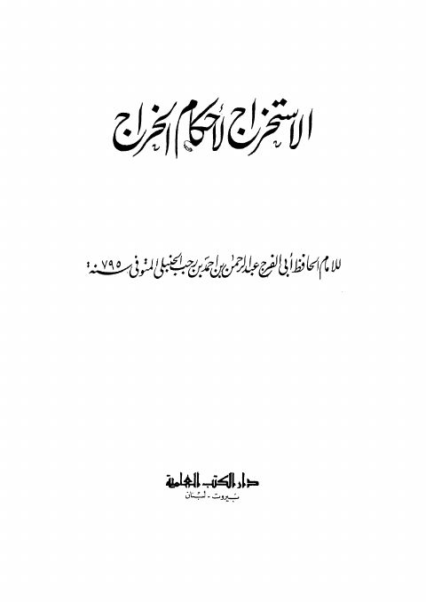

الاستخراج لأحكام الخراج
Authors: ابن رجب الحنبلي
Publishers: دار الكتب العلمية
Download Downloads need an internet connection.
- Published
- 1405هــ 1985 م
- Country
- بيروت، لبنان
- Edition
- 1
- Volumes
- 1
- Pages
- 180
- Type
- كتاب
- Category
- الفقه وأصوله
- Subcategory
- بحوث ومسائل
Description
**▫️ العنوان: الاستخراج لأحكام الخراج** ▪️ المؤلف: #عبد_الرحمن_بن_أحمد_بن_رجب_الحنبلي ▫️ الناشر: #دار_الكتب_العلمية ▪️ تاريخ النشر: 1405هــ 1985 م ▫️ بلد النشر: بيروت، #لبنان ▪️ الطبعة: 1 ▫️ عدد الأجزاء: 1 ▪️ الصفحات: 180 ▫️ نوع الوعاء: #كتاب ▪️ التصنيف الرئيسي: #الفقه_وأصوله ▫️ التصنيف الفرعي: #بحوث_ومسائل ۪